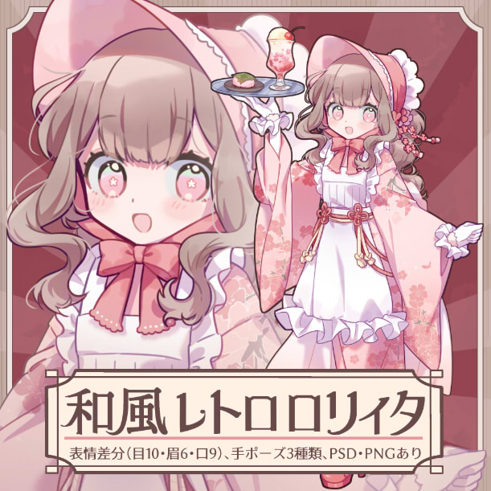
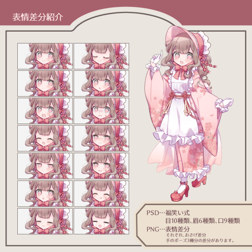
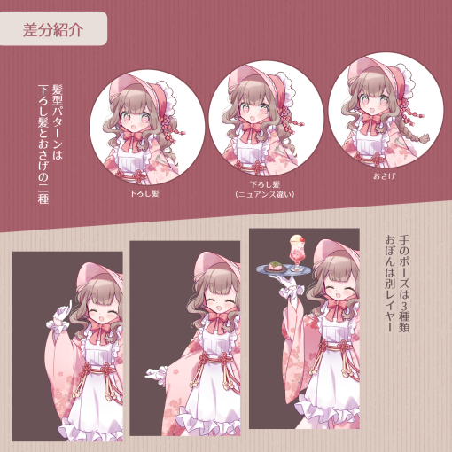
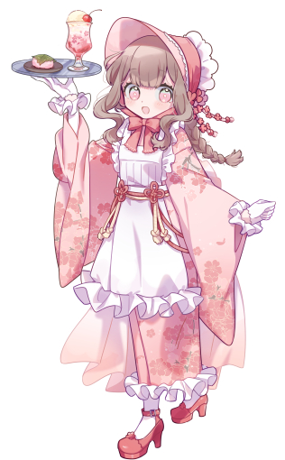

レトロ浪漫と桜がテーマのキャラクターです。使用ソフトはClip Studio Paint、制作時間は約50時間。
 

こだわった点は着物で、実際の着物を観察して描きました。
手に持っているドリンクは最初はメロンソーダでしたが、
緑色が浮いてしまうため桜ソーダにして、テーマと色の調和を取りました。
ロゴデザインについて。
使用フォントは漢字部分に源暎ラテミン、カタカナ部分はトレゴを使用。
はらい部分や角の部分に装飾を付け足し、くどいくらいの豪奢なイメージを表現しています。